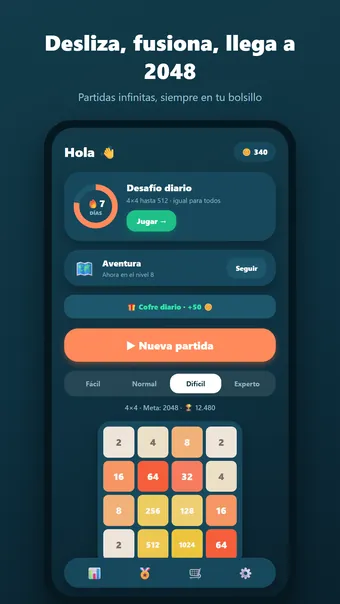
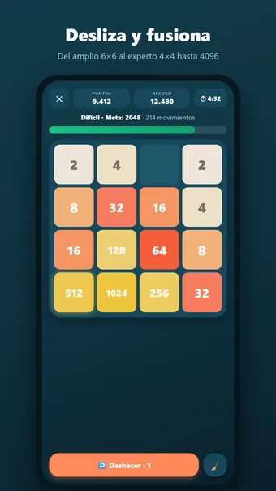
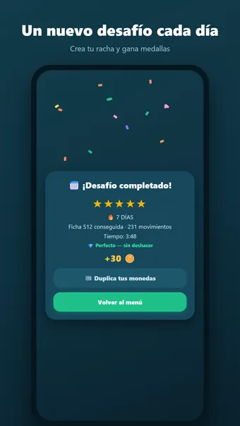
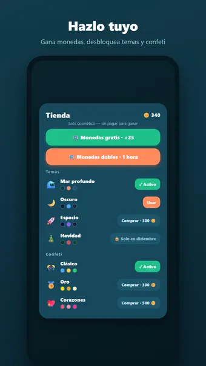

Sobre 2048 Merge
Juega a 2048 Merge, el clásico puzle de números — cuando quieras, donde quieras, totalmente sin conexión. ¡Desliza el tablero, fusiona fichas iguales y llega a 2048 y más allá!
Cómo se juega
Desliza hacia arriba, abajo, izquierda o derecha para mover todas las fichas. Dos fichas iguales que chocan se fusionan en una del doble de valor: 2 + 2 = 4, 4 + 4 = 8 … hasta 2048 y más allá. Tras cada movimiento aparece una ficha nueva; si el tablero está lleno y nada puede fusionarse, la partida termina.
Cuatro dificultades
- Fácil: amplio tablero 6×6 hasta 2048
- Normal: 5×5 hasta 2048
- Difícil: el clásico 4×4 hasta 2048
- Experto: 4×4 hasta 4096 — para auténticos estrategas
Modo aventura
Recorre cientos de niveles numerados cada vez más difíciles: la meta crece y el tablero se encoge. Desbloquéalos uno a uno, gana una medalla en cada uno y recoge recompensas por hitos.
Desafío diario
Cada día un tablero único, igual para todos. Gana una medalla de 1 a 5 estrellas y crea una racha: ¡3, 7, 30 o incluso 100 días seguidos!
Impulsos si te atascas
¿Sin salida? Limpia todos los 2 y 4 con el impulso de limpieza, o toma una segunda oportunidad tras el fin de partida que conserva tus fichas más altas.
Monedas y temas
Gana monedas con cada meta alcanzada y gástalas en impulsos o nuevos estilos: Bosque, Espacio, Neón, Madera, Mármol, Navidad y Halloween. Solo cosmético — sin pay-to-win.
Y además
- 27 logros, desde tu primera meta hasta una racha de cien días
- Estadísticas detalladas: mejor puntuación, ficha más alta, partidas perfectas y más
- Modo zen: apaga el temporizador y juega relajado
- Sonido y vibración (desactivables en los ajustes)
- Disponible en español, inglés, neerlandés, alemán, francés y portugués
Gratis. La app muestra anuncios, que puedes quitar con una compra opcional; no necesitas cuenta.
Preguntas frecuentes
¿2048 Merge es gratis?
Sí. 2048 Merge se descarga y se juega gratis. La app muestra anuncios, que puedes quitar con una compra opcional dentro de la app.
¿2048 Merge funciona sin conexión?
Sí. 2048 Merge funciona sin conexión a internet, así que puedes jugar en el avión, en el tren o en cualquier sitio sin wifi.
¿Necesito una cuenta para jugar a 2048 Merge?
No. No hay que registrarse ni iniciar sesión: abre la app y juega. Tus partidas y ajustes se quedan en tu propio dispositivo.
¿Cómo se juega a 2048 Merge?
Desliza hacia arriba, abajo, izquierda o derecha para mover todas las fichas. Dos fichas iguales que chocan se fusionan en una del doble de valor: 2 + 2 = 4, 4 + 4 = 8 … hasta 2048 y más allá. Tras cada movimiento aparece una ficha nueva; si el tablero está lleno y nada puede fusionarse, la partida termina.
¿Hay un reto nuevo cada día?
Cada día un tablero único, igual para todos. Gana una medalla de 1 a 5 estrellas y crea una racha: ¡3, 7, 30 o incluso 100 días seguidos!
¿Cuándo estará disponible 2048 Merge?
2048 Merge llegará muy pronto a Google Play para móviles y tabletas Android. En cuanto salga, el botón de descarga aparecerá en esta página.
Otros juegos que te pueden gustar
Puzle de bloques
Rellena el tablero por completo. Siempre resoluble, un reto nuevo cada día.
Google PlaySudoku
El sudoku clásico. Puzles infinitos y un reto nuevo cada día.
Google PlayBuscaminas
El buscaminas clásico. Campos de minas infinitos y un reto nuevo cada día.
Google PlayInformación legal
Aquí encontrarás los documentos legales que se aplican a 2048 Merge.
Contacto
¿Preguntas, comentarios o una solicitud de privacidad? Escribe a joostmuijsenberg.dev@gmail.com.